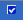
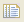
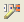
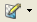
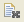

|  | The component has been customized. |
| Blank | The component has not been customized. |
|  | Selects all the components in the components view |
| Copies the selected element from the components view | |
| Paste the previous copied component from the view | |
|  | This option allows you to Edit/Animate the selected component |
|  | This option allows you to edit image and sound tools |
|  | Clears all previous actions |
| This option displays the title for all the components | |
| This option allows you to synchronize a component with the editor |